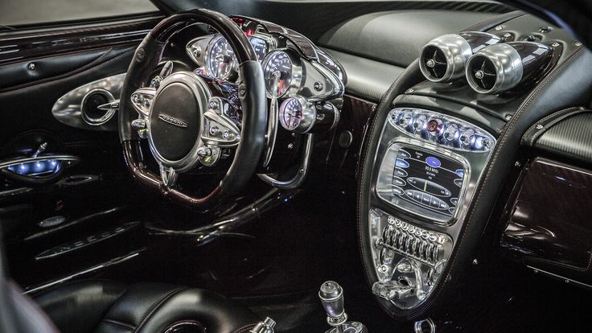
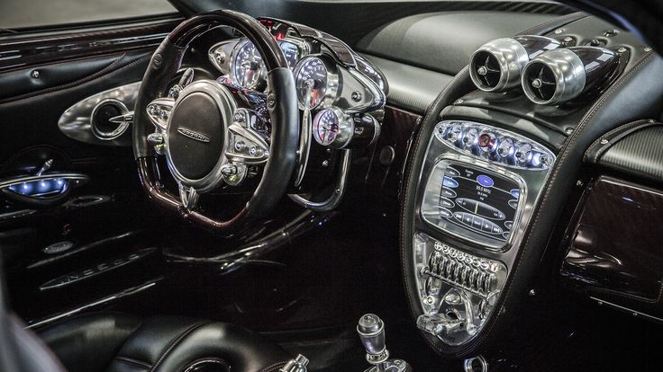
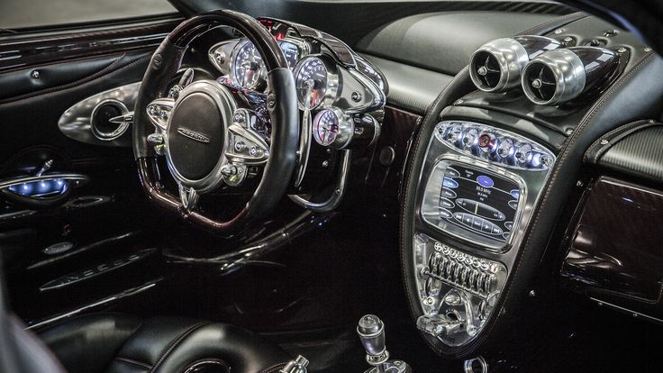

Pagani Automobili S.p.A. este o companie italiană de automobile de lux, fondată de Horacio Pagani în 1992. Compania este recunoscută pentru producția de mașini supercar deosebit de exclusiviste și performante, fiind cunoscute pentru designul lor distinctiv și calitatea excepțională a construcției.
Horacio Pagani, născut în Argentina, și-a început cariera în industria auto la o vârstă fragedă. Munca sa timpurie la companii ca Renault și Lamborghini l-a pus pe drumul spre realizarea propriei sale viziuni în ceea ce privește designul și ingineria automobilistică. A fondat Pagani Automobili cu scopul de a crea mașini care să reprezinte perfecțiunea tehnică și estetică.
Pagani Automobili S.p.A. este o companie italiană de mașini de lux, fondată de Horacio Pagani în 1992. Sediul său este situat în San Cesario sul Panaro, Italia. Compania este cunoscută pentru producția de mașini supercar deosebit de exclusiviste și performante, fiind recunoscută pentru designul lor distinctiv și calitatea excepțională a construcției.
Mașinile Pagani sunt produse manual, folosind materiale de înaltă calitate precum carbonul, titaniul și aliajele speciale. Fiecare model este construit cu atenție la detalii și este considerat o operă de artă pe roți.
| Model | Motor | Putere | Cuplu | Viteză maximă |
|---|---|---|---|---|
| Huayra | 6.0L V12 | 730 CP | 1,000 Nm | 372 km/h |

| Model | Motor | Putere | Cuplu | Viteză maximă |
|---|---|---|---|---|
| Zonda | 7.3L V12 | 760 CP | 750 Nm | 350 km/h |